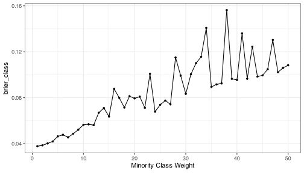
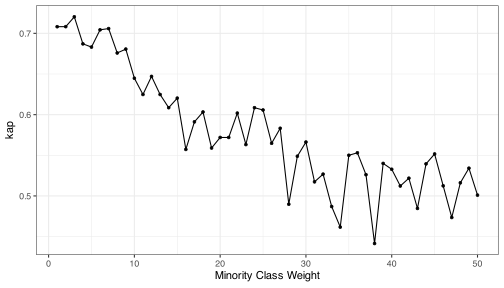
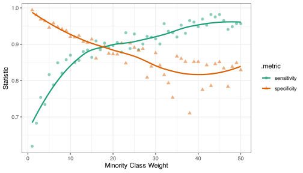
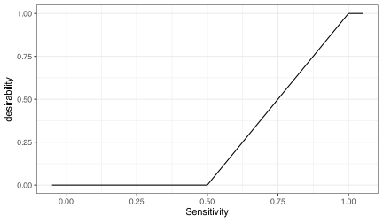
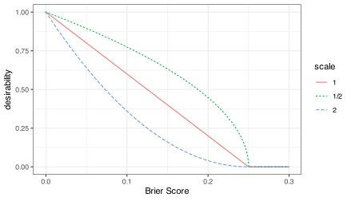
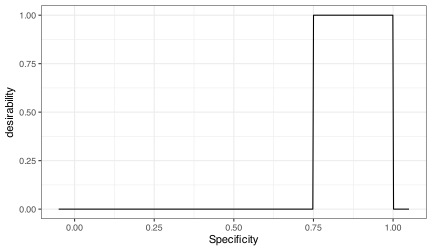
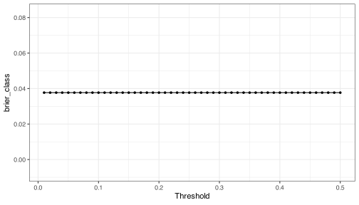
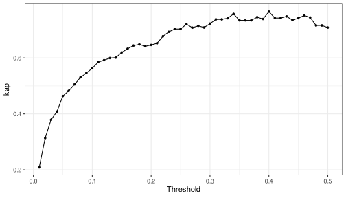
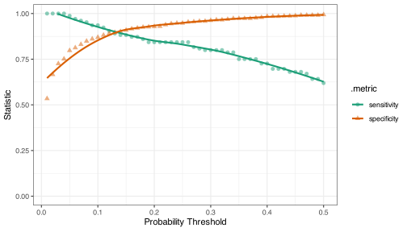

What’s New in tidymodels?
The tidymodels Team


Packages Used in This Talk
Packages Used in This Talk
Some Example Data
set.seed(1)
sim_data <- sim_classification(num_samples = 1000, intercept = -12)
sim_data %>% count(class)
#> # A tibble: 2 × 2
#> class n
#> <fct> <int>
#> 1 class_1 112
#> 2 class_2 888
sim_split <- initial_split(sim_data, strata = class)
sim_train <- training(sim_split)
sim_rs <- vfold_cv(sim_train, v = 10)There are 15 numeric predictors with various linear and nonlinear effects.
A Cost-Sensitive Neural Network
We’ll demonstrate some new features using a neural network model. We’ll tune a single parameter (just for illustration):
mlp_wt_spec <-
mlp(hidden_units = 50, penalty = 0.01, learn_rate = 0.1, epochs = 500) |>
set_engine("brulee", stop_iter = 3, class_weights = tune()) |>
set_mode("classification")
rec <-
recipe(class ~ ., data = sim_train) |>
step_normalize(all_numeric_predictors())
mlp_wt_wflow <- workflow(rec, mlp_wt_spec)Basic Grid Search
A total of 10 * 50 = 500 models are fit.
A few versions ago, tune defaults to using non-random, optimized space-filling designs.
Brier Curve Results
Kappa Results
Sensitivity/Specificity Results
New Things
Parallel Processing
Changing Frameworks
tidymodels has always used the foreach package to enable parallel processing. Sadly, we’ve decided to move to packages that are being actively developed.
The tune 2.0 disables foreach and enables the use of either the future or mirai packages:
Choosing Best Parameters
Differing Goals
How can we jointly optimize different performance metrics?
One option is desirability functions. These are tools that convert the range of performance metrics to [0,1] where 1.0 is most desirable.
Desirability Functions



The desirability2 package has inline functions for these.
Multiparameter Optimization
multi_res <-
show_best_desirability(
mlp_wt_res,
minimize(brier_class, low = 0.00, high = 0.25),
maximize(sensitivity),
constrain(specificity, low = 0.75, high = 1.0),
n = 1
)
multi_res |> select(1, 3:6)
#> # A tibble: 1 × 5
#> class_weights brier_class kap sensitivity specificity
#> <int> <dbl> <dbl> <dbl> <dbl>
#> 1 45 0.0995 0.552 0.982 0.851
multi_res |> select(starts_with(".d_"))
#> # A tibble: 1 × 4
#> .d_min_brier_class .d_max_sensitivity .d_box_specificity .d_overall
#> <dbl> <dbl> <dbl> <dbl>
#> 1 0.602 1 1 0.844Emphasize Brier Score
more_sens <-
show_best_desirability(
mlp_wt_res,
minimize(brier_class, low = 0.00, high = 0.25, scale = 2.0),
maximize(sensitivity),
constrain(specificity, low = 0.75, high = 1.0),
n = 1
)
more_sens |> select(1, 3:6)
#> # A tibble: 1 × 5
#> class_weights brier_class kap sensitivity specificity
#> <int> <dbl> <dbl> <dbl> <dbl>
#> 1 7 0.0454 0.706 0.849 0.948
more_sens |> select(starts_with(".d_"))
#> # A tibble: 1 × 4
#> .d_min_brier_class .d_max_sensitivity .d_box_specificity .d_overall
#> <dbl> <dbl> <dbl> <dbl>
#> 1 0.669 0.634 1 0.751Postprocessing
What is postprocessing?
Postprocessing means the adjustment of predictions create by a model, such as:
- Calibration of regression predictions or class probability estimates
- Optimizing the threshold for calling a prediction “an event”
- Tools for abstaining from predicting when the results are very uncertain.
We’ve also been working with Daniel McDonald and Ryan Tibshirani, who use tidymodels to facilitate their Delphi disease monitoring platform.
This will largely affects how tidymodels “handles” time-series data, enabling quantile regression methods, and calibration of forecasts.
Adjust Predictions with Tailors
The current object type is called a “tailor” (since it adjusts existing values). It emulates the interface of recipes but are much simpler. An example:
A tailor takes predictions as inputs, but you don’t need to specify them until you use fit().
Adjust Predictions with Tailors
Like a recipe, you don’t need to use it on its own. We can add it to a workflow and use high-level functions to fit/tune it. Let’s change our example model and add a tailor:
To handle the class imbalance, we’ll try to balance sensitivity/specificity without changing the probability estimates.
Adjust Class Probability Threshold
Since we want to increase sensitivity, we need to decrease the probability of calling a prediction as “an event.” That means thresholds less than 1/2.
A total of 10 models are fit.
Brier Curve Results
Kappa Results
Sensitivity/Specificity Results
More Desirability Functions
show_best_desirability(
mlp_thr_res,
# Brier score is unaffected by the threshold
maximize(sensitivity),
constrain(specificity, low = 0.75, high = 1.0),
n = 1
) |>
select(1, 3:6)
#> # A tibble: 1 × 5
#> threshold brier_class kap sensitivity specificity
#> <dbl> <dbl> <dbl> <dbl> <dbl>
#> 1 0.04 0.0377 0.408 1 0.751Calibration
I spoke about assessing and potentially fixing predictions using a calibration model at a previous NYR Conference.
I would keep expectations low for that unless you have a lot of data. Many calibrators require a separate data set for fitting that model, and using too little data might make things worse.
Currently, tune skims some training set samples off the top to fit the calibrator. This selection emulates the original data splitting scheme. For example, it skims 10% off if you are already using 10-fold cross-validation. See this blog post.
We are working on the API for static calibration sets.
Feature selection
More New Packages
A while back, Steve Pawley wrote the colino package. This added recipe steps, which executed supervised feature filters.
We knew that we would be making something similar, and that is the job of this year’s summer intern (Frances Lin).
There are two packages: filtro contains the underlying code for filtering the predictors, and the (unreleased) important package will contain the recipe steps.
filtro scores
An example of a score object:
score_imp_rf_oblique
#> <filtro::class_score_imp_rf>
#> @ outcome_type : chr [1:2] "numeric" "factor"
#> @ predictor_type: chr [1:2] "numeric" "factor"
#> @ case_weights : logi FALSE
#> @ range : num [1:2] 0 Inf
#> @ inclusive : logi [1:2] FALSE FALSE
#> @ fallback_value: num Inf
#> @ score_type : chr "imp_rf_oblique"
#> @ sorts : function ()
#> @ direction : chr "maximize"
#> @ deterministic : logi FALSE
#> @ tuning : logi TRUE
#> @ calculating_fn: function ()
#> @ label : chr "Random forest importance scores"
#> @ packages : chr(0)
#> @ results :'data.frame': 0 obs. of 0 variables
#> @ engine : chr "aorsf"filtro scores
Scoring Methods
There is a control vocabulary of scoring methods.
Currently: aov_fstat, aov_pval, cor_pearson, cor_spearman, gain_ratio, imp_rf, imp_rf_conditional, imp_rf_oblique, info_gain, roc_auc, xtab_pval_chisq, and xtab_pval_fisher.
Recipe Steps
These have not been implemented yet, but there will be several to choose from.
For example:
library(important)
recipes(outcome ~ ., data = data) |>
step_rank(method = "imp_rf", prop_terms = 1 / 10) # or num_terms
recipes(outcome ~ ., data = data) |>
step_rank_desirability(
maximize(imp_rf_oblique, low = 2, high = 100),
constrain(cor_pearson, low = 0.5, high = 1.0),
prop_terms = 1 / 10
)
recipes(outcome ~ ., data = data) |>
step_filter(cor_pearson >= 0.75 & imp_rf_oblique >= 2)Importance Too
The important package also has a function importance_perm() to compute random-forest type permutation importances.
Why make another package to do this?
importance_perm()can efficiently parallel process all of the work.- Any yardstick metrics can be used (and more than one).
- We can compute feature importance at two levels:
- The original feature (e.g., day of the week), or
- Any derived predictors (e.g., dummy variables, PCA components, spline basis columns, etc).
Quantile Regression
Existing Work
parsnip and hardhat already contain some initial tools for fitting quantile regression models.
We anticipate new model engines and more work in yardstick and tune to make this a bona fide model mode. An example:
Prediction Format:
preds <- predict(qr_fit, mtcars[1:2, -1])
preds
#> # A tibble: 2 × 1
#> .pred_quantile
#> <qtls(3)>
#> 1 [21.8]
#> 2 [21]
as_tibble(preds$.pred_quantile)
#> # A tibble: 6 × 3
#> .pred_quantile .quantile_levels .row
#> <dbl> <dbl> <int>
#> 1 20.9 0.25 1
#> 2 21.8 0.5 1
#> 3 25.3 0.75 1
#> 4 20.1 0.25 2
#> 5 21 0.5 2
#> 6 24.4 0.75 2Sparse Data
It’s Happening!
Emil Hvitfeldt has worked very hard to make sure that we can consume/use a sparse data structure for tidymodels.
We use R’s arcane ALTREP tools to enable sparse vectors and, by extension, data frames that are effectively sparse.
This can severely cut down memory usage, especially in recipes.
This happens automatically but you can opt-out.
However, only a few models can take sparse data as inputs (xgboost, glmnet, lightgbm, and
ranger).
An example from Emil’s recent presentation:
Learning More About Sparsity
catboost
<sigh>
Normally, if a package isn’t on CRAN, we don’t support it. catboost will probably never make it there, so we gave in.
With the most recent release of bonsai:
AI Tools
Tooling
Simon Couch is incredibly productive at making top-notch AI support packages for R. Relevant for tidymodels is predictive, an agentic frontend for predictive modeling with tidymodels.
See https://github.com/simonpcouch/predictive
I have an unfinished port of Tomasz Kalinowski’s quartohelp repo called tmhelp. These are both chat apps built using RAG with the tidymodels documentation.
Books
Shameless Promotions
I’m about 40% done with Applied Machine Learning for Tabular Data (website) (tidymodels companion)
Hopefully, we can update the print version of Tidy Models with R (website) or have a second edition.
Emil is still working on his encyclopedia of feature engineering methods: Feature Engineering A-Z (website).
What’s Next
What’s Next
We’ll still be working on adding quantile regression to tune, yardstick, and other packages.
Some dangling features: parameter constraints, a new Gaussian Process model, and nested resampling. If we have time, we might also include more causal inference tools.
I suspect that, around the new year, we’ll move into a “Snow Leopard” phase where we concentrate on cleaning up/optimizing after releases, add additional documentation, and refactoring our extra testing suite (which really needs some love).
Thanks
Thanks for the invitation to speak today!
The tidymodels team: Hannah Frick, Emil Hvitfeldt, and Simon Couch.
Special thanks to the other folks who contributed so much to tidymodels: Davis Vaughan, Julia Silge, Edgar Ruiz, Alison Hill, Desirée De Leon, our previous interns, and the tidyverse team.